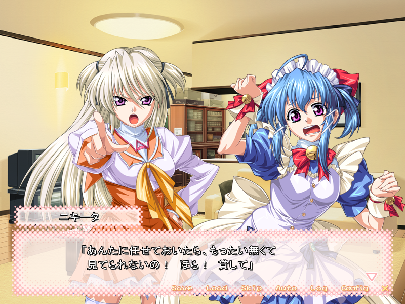
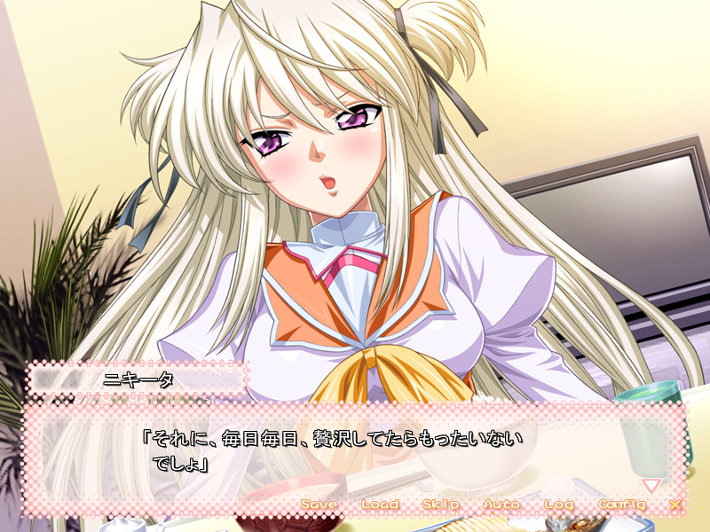

Artificial Japan
On moege, fanservice, and self-inserts.
⠀
——————————————————————————————
"There's a market for high-end paint and fancy canvases; despite that, there's a market for pencils and sketchbooks."
Article Writer: Takafumi Sakagami | Published: 26 July, 2026

Having recently covered The 2008 Terios title Happy Princess ~Another Fairytale~ (Volume 9, Page 19) and the 2008 MMO Ai Sp@ce (Volume 8, Page 31), I've been thinking back to that time in my life. I don't think I'd consciously appreciated the vibe a certain subset of that time period's moe media had. In that same year, we had stuff like To Love Ru and Nogizaka Haruka no Himitsu. I'd rather not just spam names to get my point across, so let me explain in general terms.
Happy Princess is a simple game. You play as a nice but dense guy, Tomoyuki. Several princesses have to, for complicated reasons, compete for Tomoyuki's hand in marriage. From there, it's mostly all comedy and fanservice, with a bit of romance and a light plot.
These are bright stories. The narrative isn't serious, the comedy is cheesy, the writing is basic, and there's not really a hook to catch your interest. They basically live and die by the cover art, and because of that, it's unlikely that people would return to them in the same way they do the Clannad anime or that one drama-packed route in Yosuga no Sora which everyone pretends is the only route worth playing.
I don't think there's a strong appeal to being basic. In my modern life, those kinds of stories only meet me when they pop up in a season of anime that isn't packed with must-watch titles. I've described them as filler anime in the past, and when it comes to video games, I could see myself describing Happy Princess and Ai Sp@ce as shovelware games. They exist to pass the time, inoffensively so.
You get to enter a perfect world. Everything is cute and colourful, logic need not apply. You don't need to rely on parents to be raised right, you don't need a job to pay for your living arrangements, and nothing sad needs to happen to make the happy days special. The bland positivity lasts until the happy ever after arrives.
It's not just a 2008 thing, nor is it just a trope of a genre or medium. A lot of Japanese TV is almost annoyingly cheery. It's very artificial; everyone's always forcing a smile, and nothing bad is supposed to happen. I know a few people who really hate that. But in the realms of novel games, anime, manga, web novels, etc... this boring, generic style of storytelling is incredibly common, quite popular, and loudly looked down upon.
In a cynical sense, Happy Princess is commercialised happiness. Pay up and see a story where everything is great and all the cute girls like you and all your worries don't exist. I definitely understand that viewpoint... Yet I also see passion.
Now, I don't think passion is something you can genuinely see in (or feel from) a product. I wrote once that this kind of thing is all just projection. Something I view as a soulless product, you may view as a work of passion. We see what we want to see, make the things we love into a passionate thing, and make the things we hate into mindless slop. Realistically, none of us know how much love was, or wasn't, put into them.
There's a triteness to wish fulfilment. There's something unsatisfying about audience stand-in protagonists; there's less to admire about a game that slaps tropes together and calls it a day.
Even so, I really do feel that these kinds of stories are special. The fact that a team got together, spent months or maybe even years of their lives creating something, all with the aim of making something cute... Well, I think that's cute.
I almost want to say that I don't think the teams behind this kind of inoffensively plain media intend to make anything special, but in writing that, I think the nuance behind those words is wrong. These works are created to make people happy, and happiness is special to me, so these games are fundamentally trying to do something special.
But hopefully you understand what I mean; they're not trying to reinvent the wheel or revolutionise the format. I think I respect that more, frankly.
There's a scene in ~Another Fairytale~ where Nikita—a fallen princess who, despite her pride, winds up living with the protagonist and his maid—decides to take over cooking duty. She can't bear to see them waste so much food, and she believes that even the overlooked parts of everyday ingredients have good to give. They aren't just something to throw away.
When the trio sit down at the table to eat Nikita's carefully prepared meal, they're met with an incredibly boring, generic set of dishes. There's nothing fancy about the recipes, nor is there a luxurious amount of food, and to the protagonist, it's all weirdly safe and traditional, but... it's all presented well. So he eats it, he enjoys it, and having had a nice evening, the day passes by.

It's easy to be fueled by a desire to change things. Wanting to be the next big thing, or to fix a problem in a genre that only you seem to notice, or to make a statement piece that'll change how people see the world... Like that, wanting to be the best is an arrogant, brave way to create.
A safe way to create is to manufacture things that blend in, that are no different from the crowd of stories that now illustrate an image best labelled generic.
No ambitious soul sits down with the goal of making the next 6/10 story.
There's a market for high-end paint and fancy canvases; despite that, there's a market for pencils and sketchbooks. Being the best, having the best, and only being exposed to the best... maybe it's just me, but I find that to be soulless.
Being plain—a 6/10 that strives for good yet simple results—feels far more human.
I think that's why this kind of media, all of which paint a fantasy of a perfect life in all its artificiality, looks as if it were made with passion... or maybe I'm just seeing what I want to see. After all, a group of people gathered together and spent some of their precious lives making something that is nothing more than cute...
I think that's cuter than any heroine.
《Contact》
Email: TakafumiSakagami@gmail.com
Twitter: @Taka_Sakagami
Bsky: @Taka-Sakagami.bsky.social
 |
 |
|
 |